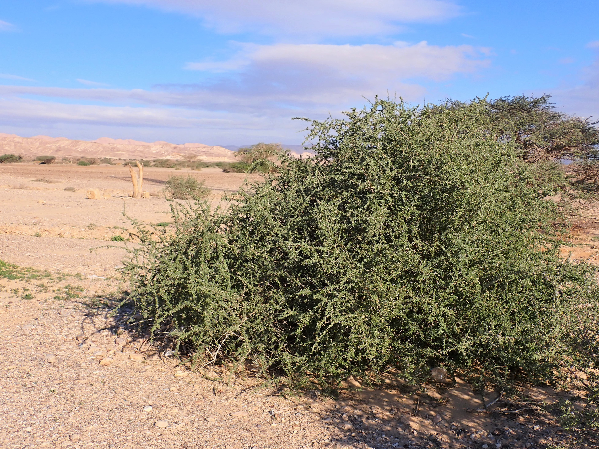
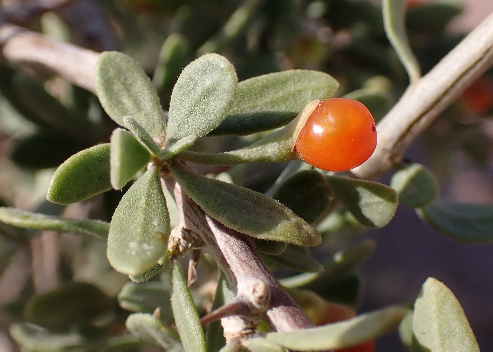

A knowing hunter does not walk the open country blind, waiting for a bird to pass by chance. He reads the scrub, feels the soil, and often senses where game may drop before he sees it. In our Arabian deserts and wadis, few shrubs tell the place as clearly as awsaj (Lycium shawii).
You find it in the belly of a shuʿayb — tangled, sharp with thorns — a small fortress against summer drought, waiting for the first hint of rain.

A migrant’s inn and fuel stop
A green, living awsaj in bare ground is a meaningful drop point. A tired migrant — a small warbler-type dukhaykhla, a shrike, or a dove that has flown hundreds of kilometres — finds here what many other bushes lack:
Cover: The woven spines shelter small birds from many raptors, including peregrines, and make it harder for ground predators such as foxes to push into the heart of the shrub. Inside, small birds rest and roost.
Energy fruit (“wolf grapes”): Small round red berries, known locally as ʿinab al-dhiʾb or awsaj berries, offer moisture and natural sugars a spent bird can use before the next leg. That is why many hunters sweep awsaj first at dawn for a flicker of feathers deep inside.

From the folk field pharmacy
Elders did not pass awsaj lightly; it belongs to long-standing Arabian folk medicine. What follows is heritage as told in the field, not modern medical advice, and it does not replace clean water, proper dressings, or care when needed:
Cuts and scratches: Folk telling has it that if someone took a nick from sharp stone or thorn and feared contamination, they would take a handful of tender awsaj leaves, rub and crush them between two clean stones, and set the juice as a dressing straight on the wound. The astringents in the leaves, the story goes, stop light bleeding and act as a natural disinfectant against infection.
Sand in the eyes: It is told that in sudden sandstorms the Bedouin used to boil awsaj leaves in a little clean water, leave it to cool fully, then use it as a wash for irritated eyes — to cool them and clear sand grains.
Camp stomach upset: Folk accounts also say that for a sudden camp cramp, or after drinking water that sat badly, boiling a few awsaj leaves and sipping the bitter water slowly works as a natural soother and anti-spasmodic.
Nature is not an enemy to defy, but an open book; those who learn the language of its shrubs lose their way less often.

{kind=link}
{kind=link}